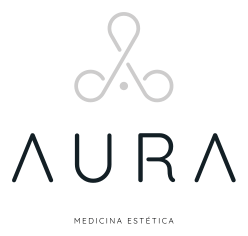
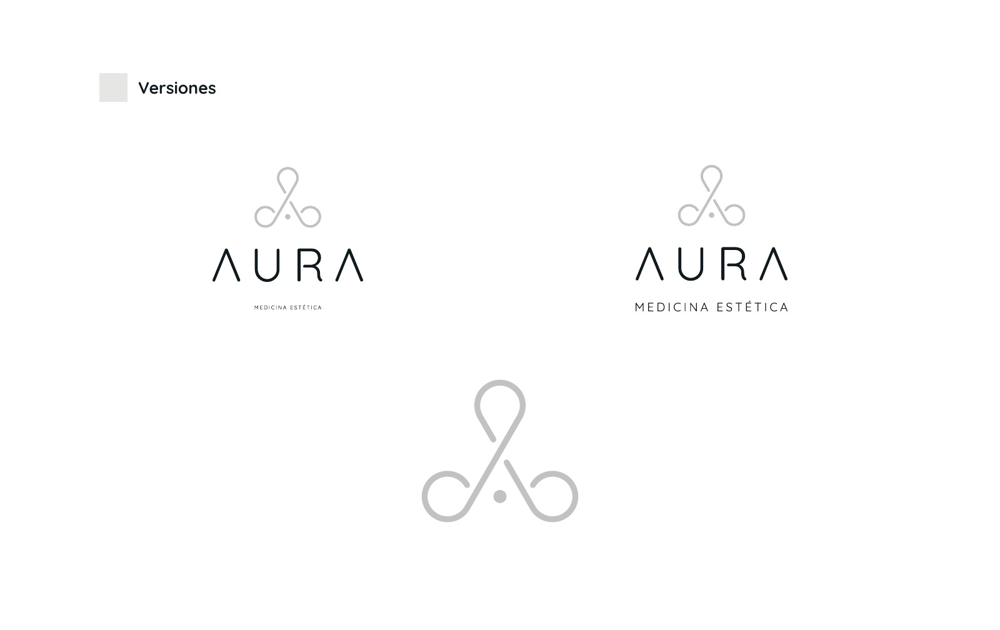
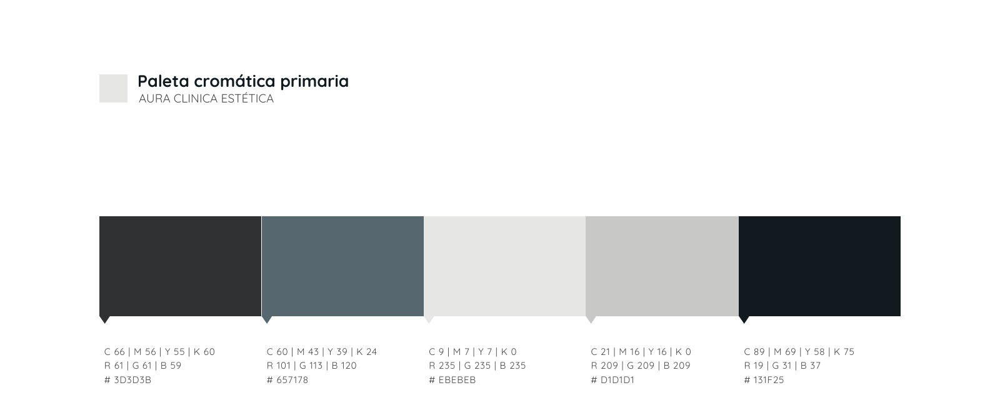
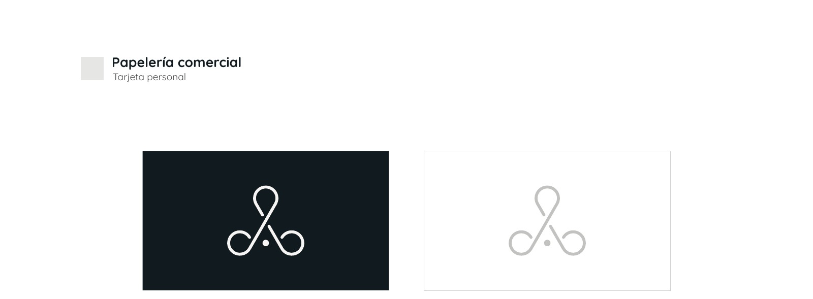
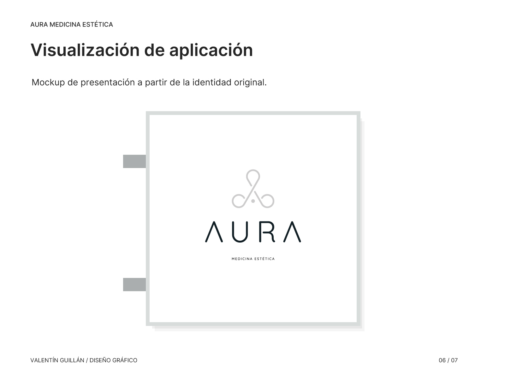

Todos los proyectos
Identidad visual
AURA Medicina Estética
Diseño de identidad visual y piezas del manual original.
Explorar el proyecto
El proyecto
Símbolo, color
y tipografía.
La selección reúne el identificador, las versiones del símbolo, la paleta y las tipografías de AURA, junto con una trama y dorsos de tarjetas.
- Cliente
- AURA Medicina Estética
- Diseño
- Valentín Guillán
- Participación
- Diseño de identidad visual y piezas del manual original
Desarrollo visual
Símbolo y versiones
Las composiciones conservadas combinan el símbolo, AURA y su descriptor.

Desarrollo visual
La paleta original
Grises y un tono gris azulado forman parte de la identidad documentada.

Desarrollo visual
Quicksand y Ubuntu
Quicksand para el logotipo y Ubuntu como tipografía secundaria.

Desarrollo visual
El símbolo en aplicación
La trama y los dorsos de tarjetas llevan el símbolo a distintos soportes.


Visualización de aplicación: AURA Medicina Estética

Participación y créditos
AURA Medicina Estética
Diseño de identidad visual: Valentín Guillán.